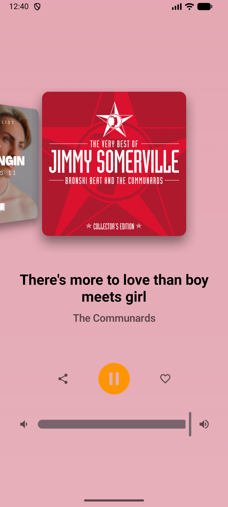
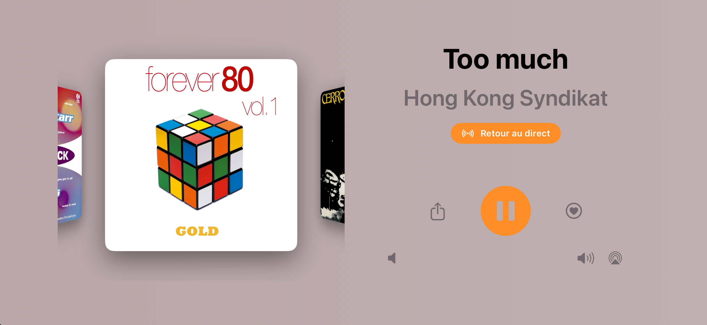
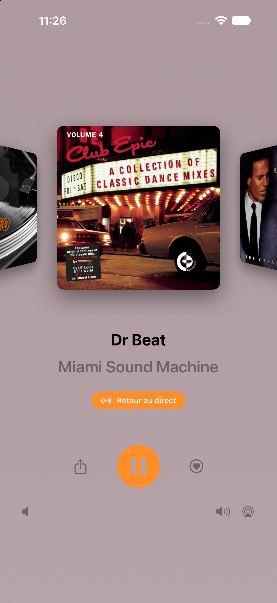
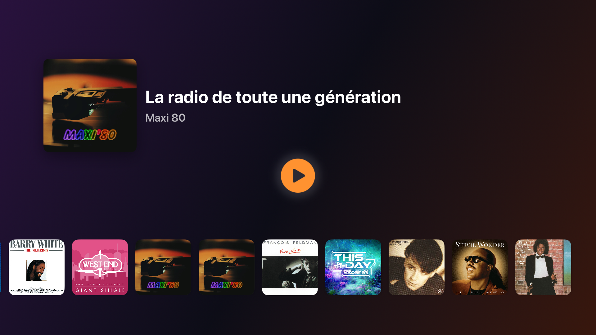
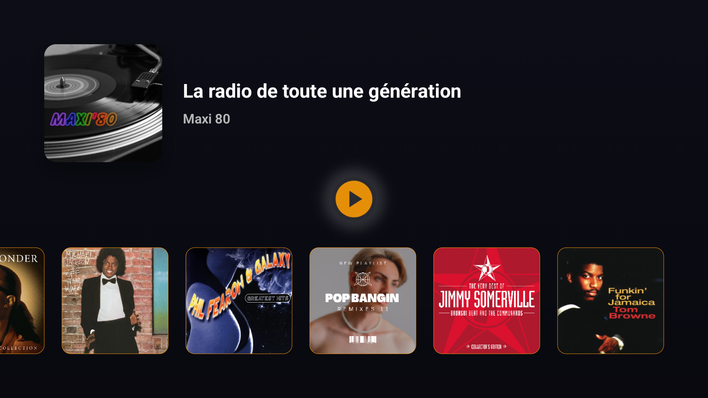

En direct · 24h/24 · web radio
La radio de
toute une
génération.
Épaulettes et gros tubes. L'appli Maxi 80 diffuse les plus grands titres des années 80, en direct et sans interruption. Reconstruite de zéro : plus rapide, plus nette, plus belle.
Gratuit. iPhone, iPad, Mac, Android, voiture et téléviseur.


01 — Partout
Une radio, tous vos écrans.
Le même direct, de la poche au salon. Appuyez sur lecture ; les tubes s'enchaînent.
-
Mobile
iPhone, iPad et Android. En Wi-Fi, en 4G ou en 5G, le direct vous suit.
-
Sur Mac
Une app native sur macOS. Les tubes en fond pendant que vous travaillez.
-
En voiture
CarPlay et Android Auto. La bande-son de vos trajets, mains sur le volant.
-
Grand écran
Apps natives Apple TV et Android TV. Les pochettes en grand dans le salon.
-
Sur vos enceintes
AirPlay vers l'enceinte ou l'Apple TV, commandes sur l'écran de verrouillage.
-
Écran verrouillé
Lecture, pause et titre en cours depuis le verrouillage et les notifications.

02 — Historique
Vous avez raté
le morceau d'avant ?
Revenez en arrière dans un superbe carrousel Cover Flow. Faites défiler les derniers titres, retrouvez celui qui vous trottait dans la tête, puis d'un geste : retour au direct.
- Les derniers titres, pochettes à l'appui
- Retour au direct instantané
- Un coup de cœur ? Partagez-le tout de suite

03 — Pochettes
Chaque cover,
nette et en grand.
Des pochettes en haute résolution, et le nom de l'artiste et du titre toujours sous les yeux, toujours à jour. Vous savez ce qui passe, à la seconde près.
04 — Le salon
Les tubes, sur grand écran.
Une app native pour Apple TV et Android TV amène le direct et les pochettes dans votre salon.


05 — La route
La bande-son
de vos trajets.
Compatible CarPlay et Android Auto. Montez à bord, lancez le direct, gardez les mains sur le volant. Les années 80 vous accompagnent, kilomètre après kilomètre.
06 — Et aussi
Les petits plus.
Partagez l'instant
Un coup de cœur pour le morceau du moment ? Envoyez-le à un ami en un geste.
Commandes où il faut
Lecture et pause depuis l'écran de verrouillage et les notifications.
Soutenez la radio
Maxi 80 vous met de bonne humeur ? Faites un don directement depuis l'appli.
Reconstruite de zéro
Technos modernes, app plus rapide, plus fluide, avec un tout nouveau look.